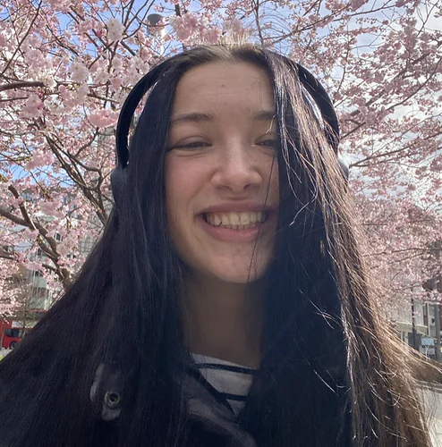

Tanya Bas
Research Engineer
I am an MTS at AIUC, building confidence infrastructure for AI agents and aiming to align incentives to reduce catastrophic AI risks. I’m interested in scalable oversight, safety evaluations, and monitoring.
My work sits at the intersection of research and engineering: advancing how we red-team AI agents and building the infrastructure to run those evaluations at scale.
Before AIUC, I worked at Palantir as one of the first ~20 AI engineers, building harnesses to 10× the impact of life sciences research.
I also did mechanistic interpretability research at ERA Cambridge, mentored by Fazl Barez, and GNN research at nPlan on risk forecasting for large construction projects.
Outside research, I enjoy endurance sports (mostly marathons and Ironman 70.3 triathlons) and learning languages (I speak 6 so far).

Updates
-
I collaborated with Transluce on the follow-up investigation of AI agents targeting U.S. and Canadian government websites. We found aggressive data-gathering tactics and failed hacking attempts, with no evidence of access to non-public data.
-
I collaborate with Transluce to investigate AI agents attempting to hack public data websites, including an Australian government health site, while carrying out ordinary data retrieval tasks. The New York Times coverage.
-
I joined Artificial Intelligence Underwriting Company (AIUC) as one of the first research engineers to help build confidence infrastructure for AI agents and align incentives to decrease AI risks.
-
I completed the ERA Cambridge fellowship under Fazl Barez and published a paper examining which LLM behaviors activation steering can reliably control, comparing its effectiveness across 50 behaviors.
-
Our work on benchmarking multimodal models in Ukrainian was published at the UNLP workshop at ACL 2025.
-
I will be joining Palantir as an AI engineer, working on accelerating life sciences research!
-
I wrote a paper on gender bias in language models, benchmarking their outputs against social science studies of human perceptions and official government statistics.
-
I joined nPlan, a risk forecasting company for construction projects, to work on graph neural network (GNN) research.